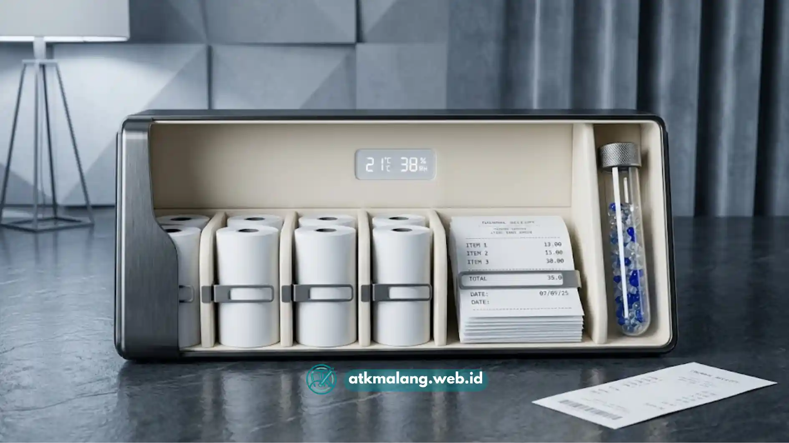

Print out kertas thermal dapat dirawat agar tidak cepat pudar dengan cara disimpan di tempat kering, dijauhkan dari sinar matahari langsung dan panas, tidak ditumpuk dengan plastik PVC, serta dilaminasi bila perlu disimpan lama.
- Kertas thermal menghasilkan cetakan lewat reaksi panas, bukan tinta cair, sehingga sifatnya sensitif terhadap suhu dan cahaya.
- Penyimpanan yang salah adalah penyebab utama struk cepat memudar dan sulit dibaca kembali.
- Kontak dengan bahan kimia tertentu seperti alkohol, minyak, dan plastik PVC dapat mempercepat kerusakan lapisan thermal.
- Untuk kebutuhan arsip jangka panjang, fotokopi atau pindai struk thermal lebih disarankan daripada menyimpan aslinya.
- Kualitas kertas thermal itu sendiri turut memengaruhi seberapa lama hasil cetak bisa bertahan.
Daftar Isi
- Apa Itu Kertas Thermal dan Bagaimana Cara Kerjanya
- Mengapa Hasil Cetak Kertas Thermal Bisa Cepat Pudar
- Bagaimana Cara Merawat Print Out Kertas Thermal yang Benar
- Faktor yang Memengaruhi Daya Tahan Cetakan Thermal
- Kesalahan Umum dalam Menyimpan Struk Thermal
- Tips Tambahan agar Cetakan Kasir Lebih Awet
Apa Itu Kertas Thermal dan Bagaimana Cara Kerjanya
Kertas thermal adalah kertas berlapis kimia khusus yang menghasilkan gambar atau teks saat terkena panas dari kepala printer, tanpa menggunakan tinta atau pita karbon.
Lapisan pada kertas thermal mengandung zat pewarna yang bereaksi ketika dipanaskan oleh elemen pemanas (thermal head) pada printer. Reaksi kimia inilah yang membentuk karakter angka, huruf, atau kode batang pada permukaan kertas.
Karena mekanismenya berbasis reaksi kimia terhadap panas, kertas ini juga tetap peka terhadap sumber panas lain setelah proses cetak selesai, termasuk sinar matahari, suhu ruangan yang tinggi, dan gesekan dengan benda panas. Ini sangat penting diperhatikan saat Anda belanja Alat Tulis Kantor.
Sifat inilah yang membedakan kertas thermal dengan kertas cetak biasa. Pada kertas biasa, tinta menempel secara fisik dan relatif stabil.
Pada kertas thermal, hasil cetak sebenarnya adalah reaksi kimia yang masih bisa "aktif kembali" atau justru rusak jika terpapar kondisi tertentu, sehingga perawatan pasca cetak menjadi sangat penting.
Mengapa Hasil Cetak Kertas Thermal Bisa Cepat Pudar
Hasil cetak kertas thermal bisa cepat pudar karena paparan panas berlebih, sinar matahari langsung, kelembapan tinggi, dan kontak dengan bahan kimia tertentu yang merusak lapisan sensitif pada permukaan kertas.
Beberapa penyebab umum memudarnya cetakan thermal antara lain:
- Paparan sinar UV dan matahari langsung: Sinar ultraviolet mempercepat degradasi zat pewarna pada lapisan thermal, sehingga tulisan lama-lama tampak pudar atau menguning.
- Suhu tinggi dan tempat panas: Struk yang disimpan di dashboard mobil, dekat kompor, atau dalam laci yang panas berisiko besar mengalami pemudaran cepat karena lapisan thermal tetap reaktif terhadap panas.
- Kelembapan dan air: Kelembapan berlebih dapat melunturkan lapisan kimia dan membuat tulisan buram atau hilang sama sekali.
- Kontak dengan plastik PVC: Sebagian plastik, terutama jenis PVC yang digunakan pada beberapa map atau pembungkus Alat Tulis Kantor, mengandung plasticizer yang bereaksi dengan lapisan thermal dan mempercepat pemudaran.
- Gesekan dan tekanan: Menggosok atau menekan struk dengan benda keras dapat merusak lapisan permukaan secara fisik.
- Kualitas kertas yang rendah: Kertas thermal dengan lapisan kimia berkualitas rendah umumnya lebih cepat pudar dibandingkan kertas dengan lapisan yang lebih stabil.
Bagaimana Cara Merawat Print Out Kertas Thermal yang Benar
Cara merawat print out kertas thermal yang benar meliputi penyimpanan di tempat sejuk dan gelap, menghindari kontak langsung dengan plastik PVC, serta memisahkan struk penting untuk diarsipkan secara digital.
Berikut langkah-langkah perawatan yang dapat diterapkan dengan menggunakan berbagai Alat Tulis Kantor pendukung:
- Simpan di tempat sejuk dan kering: Hindari menyimpan struk di tempat yang lembap atau bersuhu tinggi, seperti dekat jendela, dashboard kendaraan, atau ruangan tanpa ventilasi.
- Jauhkan dari sinar matahari langsung: Simpan struk dalam map, laci tertutup, atau folder khusus yang tidak tembus cahaya untuk memperlambat proses degradasi warna.
- Gunakan wadah bebas PVC: Pilih map, sampul, atau plastik klip berbahan polypropylene (PP) yang lebih aman dibandingkan plastik PVC untuk menyimpan struk dalam waktu lama.
- Hindari menumpuk dengan bahan kimia lain: Jauhkan struk dari lem, penghapus karet, tinta basah, atau cairan pembersih yang dapat bereaksi dengan lapisan thermal.
- Pisahkan struk penting untuk diarsipkan: Untuk struk yang berkaitan dengan garansi produk, laporan keuangan, atau dokumen pajak, sebaiknya segera difotokopi ke kertas biasa atau dipindai menjadi file digital.
- Gunakan laminasi bila perlu disimpan lama: Melaminasi struk dapat membantu melindungi permukaan dari gesekan dan kelembapan, meskipun tidak sepenuhnya mencegah reaksi terhadap panas dalam jangka sangat panjang.
- Tulis catatan tambahan dengan pensil, bukan spidol berbahan pelarut kuat: Beberapa jenis tinta spidol dapat bereaksi dengan lapisan thermal dan mempercepat noda atau pemudaran di area sekitarnya.

Menyimpan struk di tempat sejuk dan aman memastikan cetakan tahan lebih lama.Faktor yang Memengaruhi Daya Tahan Cetakan Thermal
Faktor yang memengaruhi daya tahan cetakan thermal meliputi kualitas lapisan kimia kertas, kondisi penyimpanan, intensitas paparan cahaya, serta pengaturan suhu kepala printer saat mencetak.
Beberapa faktor utama yang perlu diperhatikan saat mengelola Alat Tulis Kantor:
- Kualitas bahan baku kertas: Kertas thermal dari produsen dengan standar produksi yang baik umumnya memiliki lapisan yang lebih tahan terhadap pemudaran dibandingkan kertas dengan harga sangat murah.
- Ada tidaknya lapisan pelindung (top coat): Beberapa jenis kertas thermal dilengkapi lapisan pelindung tambahan yang membuat hasil cetak lebih tahan lama terhadap gesekan dan kelembapan ringan.
- Pengaturan suhu printer: Suhu cetak yang terlalu tinggi pada printer dapat membuat lapisan kertas cepat "lelah" secara kimiawi, sehingga daya tahan warnanya menurun lebih cepat.
- Kondisi lingkungan tempat usaha: Toko atau kasir yang berada di area dengan suhu tinggi, seperti dekat dapur atau area outdoor, secara umum berisiko membuat cetakan lebih cepat pudar dibandingkan ruangan ber-AC.
- Cara penyimpanan setelah struk diserahkan ke pelanggan: Faktor ini sepenuhnya berada di luar kendali penjual, namun dapat diedukasikan secara sederhana melalui catatan kecil di struk, misalnya anjuran menyimpan struk di tempat sejuk untuk keperluan garansi.
Kesalahan Umum dalam Menyimpan Struk Thermal
Kesalahan umum dalam menyimpan struk thermal antara lain menaruhnya di dompet kulit tebal tanpa pelindung, menyimpannya bersamaan dengan uang logam, dan membiarkannya tertindih benda panas dalam waktu lama.
Beberapa kesalahan yang sering terjadi pada penggunaan Alat Tulis Kantor harian:
- Menyimpan struk langsung di saku celana: Gesekan dan panas tubuh, meskipun kecil, dapat mempercepat pemudaran jika dilakukan berulang dalam waktu lama.
- Menumpuk struk dengan koin atau logam: Gesekan logam terhadap permukaan kertas berisiko menggores lapisan thermal.
- Menyimpan di dalam mobil dalam waktu lama: Suhu di dalam kendaraan yang terparkir di tempat panas bisa jauh lebih tinggi dari suhu luar, sehingga sangat berisiko bagi struk thermal.
- Melipat struk secara berulang pada garis yang sama: Lipatan berulang dapat merusak lapisan kimia di titik lipatan sehingga tulisan di area tersebut lebih cepat hilang.
- Menunda pengarsipan struk penting: Menunggu terlalu lama untuk memfotokopi atau memindai struk yang berkaitan dengan garansi meningkatkan risiko data pada struk sudah pudar sebelum sempat diarsipkan.
Tips Tambahan agar Cetakan Kasir Lebih Awet
Cetakan kasir dapat lebih awet dengan memilih kertas thermal berkualitas baik, mengatur kepadatan cetak printer pada tingkat yang wajar, serta melakukan pengarsipan digital secara rutin untuk dokumen penting.
Beberapa tips tambahan yang bisa diterapkan pelaku usaha dengan persediaan Alat Tulis Kantor mereka:
- Pilih pemasok kertas thermal yang jelas asal dan standar produksinya, bukan hanya berdasarkan harga termurah.
- Atur tingkat kepadatan cetak (print density) pada printer sesuai rekomendasi pabrikan agar tidak terlalu panas saat mencetak.
- Biasakan mengarsipkan transaksi penting secara digital, misalnya melalui sistem kasir atau aplikasi pencatatan, sehingga tidak sepenuhnya bergantung pada fisik struk.
- Simpan cadangan kertas thermal di tempat yang sama sejuknya dengan tempat penyimpanan struk hasil cetak, agar kualitas kertas tetap terjaga sebelum digunakan.
- Edukasi singkat kepada pelanggan mengenai cara menyimpan struk, terutama untuk transaksi bergaransi seperti pembelian elektronik.
Merawat print out kertas thermal pada dasarnya adalah soal menghindari empat musuh utama: panas berlebih, sinar matahari langsung, kelembapan, dan kontak dengan bahan kimia seperti plastik PVC.
Dengan penyimpanan yang tepat di tempat sejuk dan gelap, penggunaan wadah yang aman, serta kebiasaan mengarsipkan struk penting secara digital, hasil cetak kasir dapat bertahan lebih lama dan tetap terbaca saat dibutuhkan kembali, misalnya untuk keperluan klaim garansi atau pencatatan keuangan.